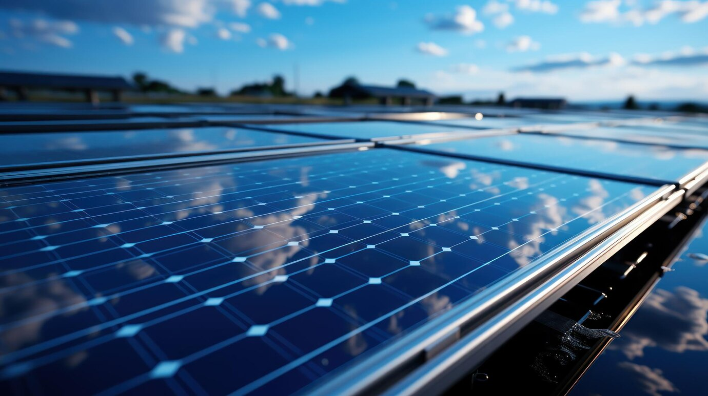
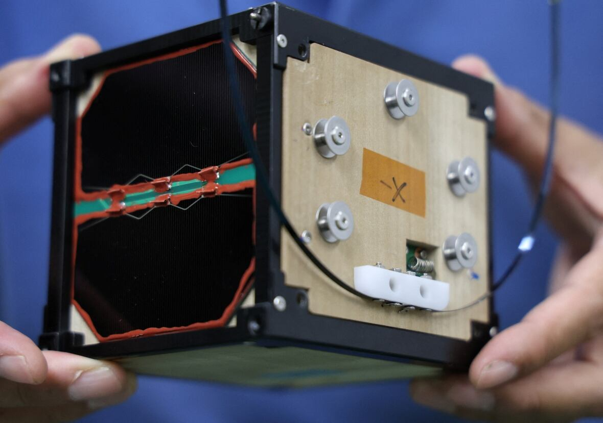
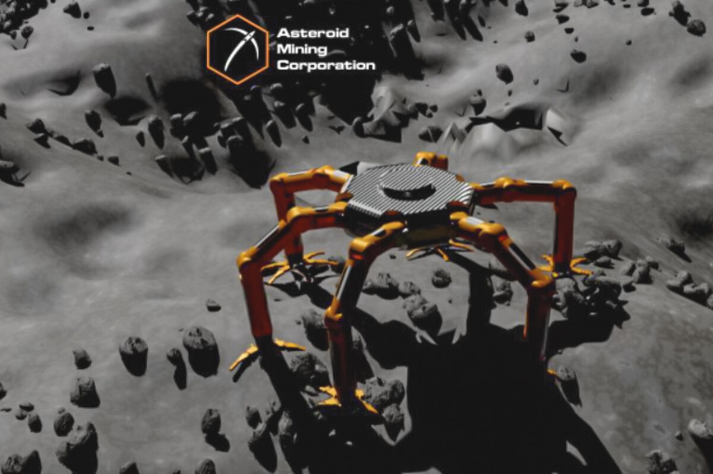
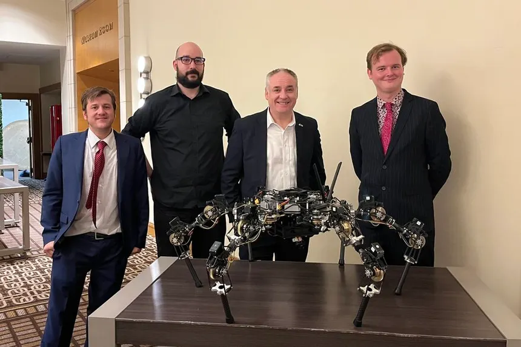
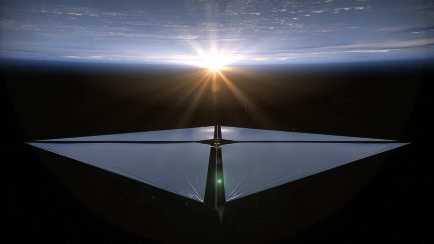
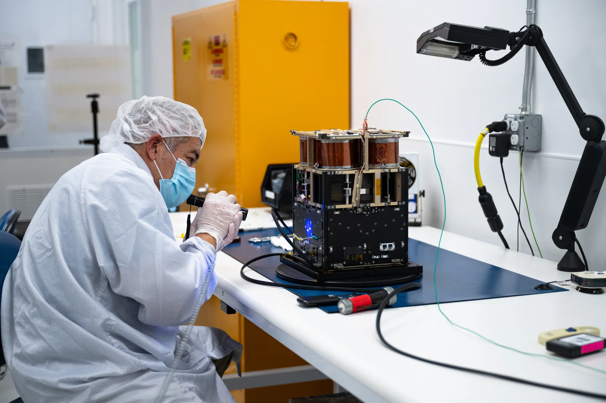
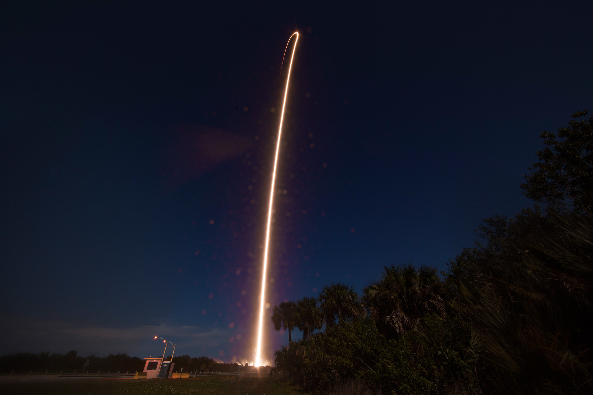
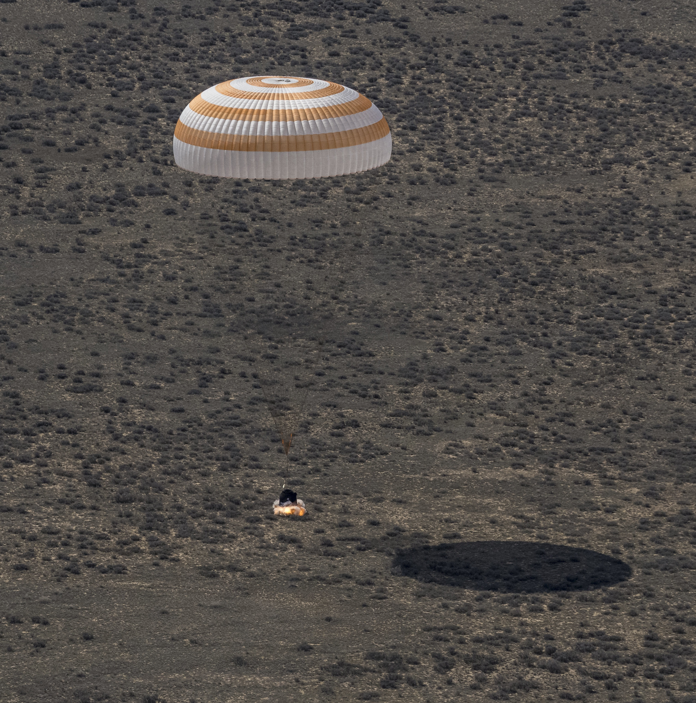
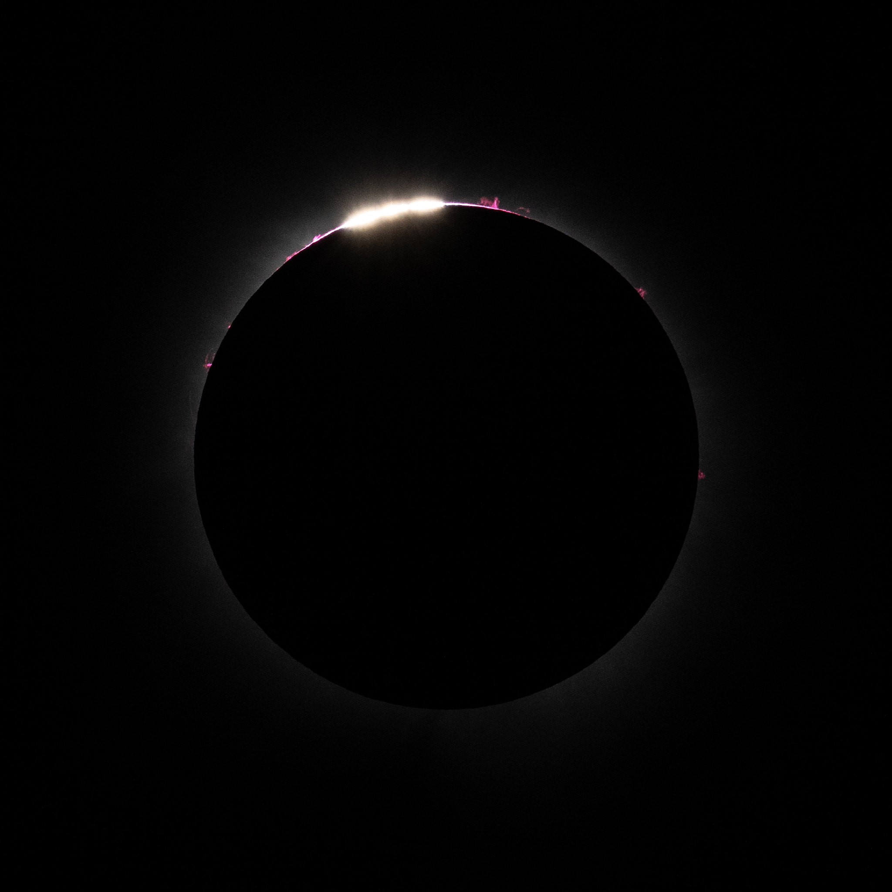

Holographic AR combines holography and augmented reality to project 3D, interactive, and realistic digital objects directly into the real world — without the need for screens or physical devices.
It’s like bringing sci-fi to life — think Tony Stark's holographic workspace in Iron Man or the holochess game from Star Wars!
Synthetic Biology: Engineering Life for the Future
Synthetic biology combines biology, engineering, and computer science to design and build new biological parts, devices, and systems — or reprogram existing ones — to perform specific tasks. It’s like coding life, but instead of programming in Python or Java, scientists work with DNA sequences!
Revolutionizing Medicine
One of the most promising applications of synthetic biology is in medicine. Scientists are designing bacteria that can detect and treat diseases from inside the human body — like tiny biological robots. Engineered cells can be programmed to produce life-saving drugs, such as insulin or personalized cancer treatments, making healthcare faster, cheaper, and more effective.
Sustainable Solutions for a Greener Planet
Synthetic biology isn’t just transforming medicine — it’s also driving sustainability. Researchers are developing eco-friendly alternatives to everyday products. For example, bioengineered microbes can create biodegradable plastics, reducing reliance on petroleum-based materials. Others are working on lab-grown meat, aiming to cut down on greenhouse gas emissions from livestock farming while still producing tasty, nutritious protein.
Brain-Computer Interface (BCI)
A Brain-Computer Interface (BCI) is a technology that allows direct communication between the brain and an external device — like controlling a computer, prosthetic, or even a robotic arm using only your thoughts!
🌱 Sustainable Green Energy: Powering Tomorrow

Solar energy is a sustainable and increasingly vital source of power, harnessed from the sun’s radiation through technologies like photovoltaic cells and solar thermal systems. It offers a clean, renewable alternative to fossil fuels, significantly reducing greenhouse gas emissions and reliance on non-renewable resources. As advancements drive efficiency improvements and cost reductions, solar energy is becoming a more viable solution for residential, commercial, and industrial sectors. Its scalability — from rooftop installations to large-scale solar farms — positions it as a cornerstone of global efforts to transition toward a more sustainable and resilient energy infrastructure.
read more
One of solar energy’s most significant advantages is its environmental impact — or lack thereof. It produces no greenhouse gas emissions during operation, reducing reliance on fossil fuels and contributing to global decarbonization efforts. Additionally, solar installations require minimal water for maintenance compared to traditional power plants, making them well-suited for arid regions.
Economically, solar energy has become increasingly competitive. The levelized cost of electricity (LCOE) from solar has dropped significantly over the past decade, driven by technological advancements, mass production, and improved efficiency.
Wind energy is a powerful and renewable source of electricity generated by harnessing the kinetic energy of moving air. Modern wind turbines convert this energy into mechanical power, which is then transformed into electricity through a generator. As an environmentally friendly alternative to fossil fuels, wind energy produces no greenhouse gas emissions during operation, contributing to global efforts to combat climate change. t is highly scalable — from small, decentralized installations to massive offshore wind farms — and has become increasingly cost-competitive due to technological advancements and economies of scale.
read more
Beyond its environmental benefits, wind energy also strengthens energy security by reducing reliance on imported fuels and creating local job opportunities in manufacturing, installation, and maintenance. However, challenges such as intermittency, land use considerations, noise, and impacts on bird and bat populations require ongoing innovation and careful planning. Advances in turbine design, energy storage, and predictive grid management are helping address these issues, ensuring wind energy remains a vital, reliable, and sustainable part of the global energy mix for the future.
🌊 What is Tidal Energy?
Tidal energy harnesses the movement of ocean tides to generate electricity. The rise and fall of tides happen because of the gravitational pull of the moon and sun on Earth’s oceans. Since tides are predictable (unlike wind or sunlight), tidal energy is considered reliable and renewable.Modern tidal power plants use various methods to capture this energy: barrages (dams that trap and release water), underwater turbines (spinning like wind turbines beneath the waves), and tidal lagoons (man-made coastal reservoirs).
read more
With a high energy density — thanks to water’s natural weight and force — tidal power can generate significant electricity even at low speeds. It’s a long-lasting solution too, with infrastructure lifespans exceeding a century.
While challenges like high upfront costs and potential marine ecosystem impacts exist, advancements in eco-friendly turbine design and site selection are helping to minimize these effects.
Tidal energy stands as a beacon of sustainable innovation — proving that with the ocean’s rhythm, we can power a greener tomorrow.
Sustainable Green Energy Evolution
2025
Solar energy projected to supply 30% of global electricity.
2030
Global wind power capacity expected to double.
2040
Hydrogen fuel cells widely adopted for transportation.
2050
Renewables predicted to cover 85% of global energy demand.

Video title
WISA Woodsat: The World’s First Wooden Satellite
n a world driven by cutting-edge technology and futuristic materials, who would have thought wood — one of humanity’s oldest resources — would find its way into space? Meet WISA Woodsat, the first satellite built with birch plywood,
🌍 A Wooden Wonder in Orbit
WISA Woodsat is a CubeSat — a type of small satellite — measuring 10x10x10 centimeters and weighing about 1 kilogram. Unlike traditional satellites built from aluminum or carbon composites, this unique spacecraft features birch plywood panels, similar to what you'd find in home woodworking projects. Of course, this wood isn't ordinary — it's specially dried and coated with a thin layer of aluminum oxide to withstand the rigors of space.
INDUSTRIAL APPLICATION
The researchers found that honoki, a kind of magnolia tree native in Japan and traditionally used for sword sheaths, is most suited for spacecraft, after a 10-month experiment aboard the International Space Station.
LignoSat is made of honoki, using a traditional Japanese crafts technique without screws or glue.
Once deployed, LignoSat will stay in the orbit for six months, with the electronic components onboard measuring how wood endures the extreme environment of space, where temperatures fluctuate from -100 to 100 degrees Celsius every 45 minutes as it orbits from darkness to sunlight.
The Asteroid Mining Corporation (AMC), a UK-based company, has unveiled the Space Capable Asteroid Robotic Explorer (SCAR-E), a six-legged robot engineered for asteroid exploration and mining tasks. SCAR-E is designed to traverse and operate on the irregular and low-gravity surfaces of asteroids, making it a versatile tool for both space missions and terrestrial applications. AMC's partnership with Tohoku University's Space Robotics Lab has been instrumental in developing SCAR-E, positioning it as a significant advancement in space robotics.
The company developed the SCAR-E six-legged robot to outperform Spot, Boston Dynamic's
robot dog."We are coming for you Boston Dynamics," proclaimed Asteroid Mining CEO Mitch Hunter-Scullion. "You have four legs. We have six. Our go-to-market strategy is to go to the industrial inspection market and go to places which four legged robots cannot."
This includes scaling walls and inspecting ship hulls on Earth, all the way to investigating lunar craters and prospecting asteroids in space.
SCAR-E's mechanical and electronic components are well-protected against the wear and tear of superfine dust from lunar regolith and are designed to withstand exposure to radiation, launch accelerations, and extreme temperatures, making the spider-looking robot well-suited for space.
These adaptive functions also make the robot ideal for reducing human exposure to hostile environments here on Earth. SCAR-E Asteroid Mining Robot




Solar Sail Spacecraft
A solar sail spacecraft moves using sunlight itself — not by solar panels generating electricity, but by harnessing the pressure of photons (light particles) pushing against an ultra-thin, reflective sail. It’s like a futuristic sailboat, but with sunlight instead of wind.
🌞 How It Works:
A massive, lightweight, reflective sail (often made from materials like Mylar or Kapton) unfurls in space.
Photons from the Sun hit the sail, transferring momentum — even though they have no mass — and slowly push the spacecraft forward.
The pressure is tiny, but over time, it builds up to high speeds (potentially tens of thousands of kilometers per hour).
The Advanced Composite Solar Sail System demonstration uses a twelve-unit (12U) CubeSat built by NanoAvionics to test a new composite boom made from flexible polymer and carbon fiber materials that are stiffer and lighter than previous boom designs. The mission’s primary objective is to successfully demonstrate new boom deployment, but once deployed, the team also hopes to prove the sail’s performance.
Like a sailboat turning to capture the wind, the solar sail can adjust its orbit by angling its sail. After evaluating the boom deployment, the mission will test a series of maneuvers to change the spacecraft’s orbit and gather data for potential future missions with even larger sails.
# Top 2 Pictures from Spcae

NASA'S SpaceX crew-8 Launch

Expedition 70 Soyuz Landing

2024 Total Solar Eclipse
LDN 1235: The Shark Nebula
Join the Conversation
What’s your take on the future of emerging technologies?
Comment Section :
Aryan: Quantum computing is a game changer — but will it be affordable soon?
Priya: Holographic tech could redefine virtual meetings. Imagine realistic 3D calls!
Rohan: Neuromorphic chips sound wild — human-brain-level AI is closer than we think.


Comment Section :